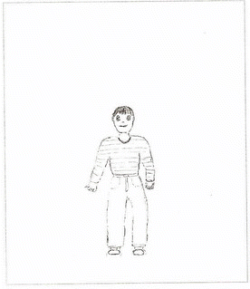
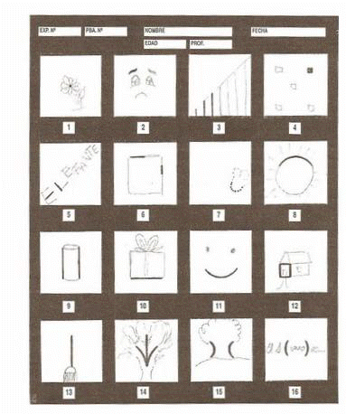

.............
Rasgos más destacados
LETRA
Orden
.....Margen izquierdo
que se ensancha progresivamente
.....Margen superior normal
.....Margen derecho irregular
.....Signos de puntuación
irregulares
..
Dimensión
.....Mediana
....Contenida
Forma
....Redondeada
....Sencilla
....Coligamento
en guirnalda
Presión
....Profundidad
media
....Tensión
mediana
Velocidad
....Moderada
o pausada
Dirección
....Sinuosa
Inclinación
....Moderadamente
inclinada
Apertura
....Variada
Continuidad
....Ligada
....Agrupada
Gesto tipo
....Bucle
....Arpón
....Espiral
....Nudo
....Final
corto
Letras reflejas
...."m"
con hampas parejas
...."g"
dificultad en los bucles de zona inferior
Firma
....Ubicada
a la derecha casi en el centro -Ilegible-
....Sobrealzada
-Sinistrógira
........
CASA
....-Dibujo
simple
....-Ubicada
del centro a la derecha
....-Techo
sobresaliente
....-Chimenea
importante
....-Puerta
y ventanas cerradas
....-Paredes
débiles
....-Camino
ausente
..............

ARBOL
....-Asimétrico
....-Contorno
de la copa abierto y dividido en partes
....-Ramas
en direcciones ascendente y a la derecha, en dos dimensiones
....y
abiertas
....-Tronco
y ramas con líneas interrumpidas y curvas
....-Huellas
en su parte media y superior
....-Raíz
más pronunciada en la zona derecha y de raya doble
...................

PERSONA
....-Dibujo
infantil sin apoyatura
....-De
sexo opuesto al propio
....-Superficie
de la hoja ocupada en forma reducida
....-Trazado
curvo, bosquejado
....-Ropa
detallada
....-Cabeza
pequeña
....-Ojos
y boca marcados, orejas visibles
....-Brazo
izquierdo más grande y más separado de cuerpo que el
....derecho
....-Manos
con dedos truncados o echados hacia adentro
....-Bolsillos
y bragueta marcados
....-Piernas
separadas
....-Pies
esbozados
...............

WARTEGG
....-Toca
el estímulo con dibujo inclinado a la izquierda en el cuadro 1
....-No
lo utiliza, en el 2
....-Repite
el tema aumentándole la altura hacia la zona superior
....derecha,
en el 3
....-Multiplica
puntos, en el 7
....-Cierra
con movimiento circular y compone un dibujo simple,
....en
el 8
....-Deja
semicírculo abierto, en el 11
....-Realiza
el dibujo en la zona inferior, en el 13
....-Une
las curvas en un motivo, en el 15
..............

BENDER
....-Secuencia
irregular
....-Primer
dibujo, en el margen izquierdo superior
....-Poco
espacio entre figuras
....-Aumento
y disminución de los sucesivos diseños
....-Alteración
de rectas y curvas, en las tarjetas A, 4, 6 y 8
....-Ángulo
desdibujado, en la 3
....-Retrogresiones,
en la 3 y 5
....-Dificultad
de contacto, en la 7 y 8
Interpretacion psicologica
Área intelectual
....Su manera de manejarse en el mundo es a traves
del sentimiento, con claro predominio de este sobre la razon.
....Posee imaginación, creatividad, ensoñación,
fantasía, y cierta limitacion en cuanto a sus potencialidades.
....Ademas, cuenta con facilidad de expresion verbal,
de adaptación a las distintas situaciones y con flexibilidad en sus
ideas.
....Su principal modo de conocimiento de la realidad
es la intuición que prevalece sobre el razonamiento.
....Asocia pero con ideación limitada. El orden
lógico se presenta algo alterado. Es desorganizada, confusa. Por esta
causa, en algunas circunstancias, le cuesta discriminar con claridad las
ideas.
....Evidencia preocupación por lo concreto y
práctico.
....No está segura de lo que piensa. Tiene dificultad
para resolver problemas, motivo por el cual busca apoyo en ideas ajenas
para poder tomar decisiones.
....Está abierta a los pensamientos de los otros pero
cuando no escucha lo que desea, tiende a cerrarse.
....La impulsividad, es decir, la reacción sin freno
inhibitorio de los actos, aparece como forma de actuación, en
determinados momentos.
....También la caracteriza la distracción. Con
frecuencia, desvía la atención hacia otros objetos, cuando aparecen
estímulos que la desaplican del objetivo central.
....Por otra parte, se dispersa fácilmente ya que
pone la atención de manera desordenada, en múltiples direcciones,
respondiendo a incentivos simultáneos.
....Por estos motivos muestra una ligera dificultad
para los aprendizajes y su rendimiento es menor que las posibilidades
reales con las que cuenta.
Área afectiva
....Presenta ciertos inconvenientes en distinguir lo
que realmente siente, piensa, quiere, ambiciona y dice ser, confundiendo
su identidad con la de otros, haciendo del deseo ajeno algo propio.
....Se observa insuficiencia en su energía libidinal
que la conduce a tener una actitud abúlica, indolente, apática,
despreocupada, pasiva y a renunciar a cualquier acción que le presente
oposición y le exija esfuerzo.
....Carece del empuje necesario para comenzar una
actividad, para tomar decisiones de manera autónoma, para enfrentar y
resolver situaciones por sí misma y para gratificar sus necesidades y
deseos.
....Cambia en forma permanente su manera de razonar,
emocionarse y obrar.
....Su inestabilidad, su inseguridad, su inmadurez
afectiva y su baja tolerancia a la frustración la llevan a no adoptar
una conducta madura frente a la realidad y a eludir obligaciones y
responsabilidades.
....Adolece de la necesaria confianza en sí misma,
por lo que se aferra a algo conocido para tener más seguridad y poder
actuar.
....Precisa que elogien su labor y comportamiento,
para sentirse bien.
....Se observa represión de afectos e inhibiciones en
su conducta.
....Puede dejarse llevar por sus emociones cuando la
presión del ambiente es considerable. También, es posible que, en
ocasiones, vuelque la hostilidad hacia dentro.
....Es una persona sencilla en su manera de ser,
altruista y sincera, con un importante grado de fiabilidad.
Área social
....Es extrovertida, receptiva, abierta para
establecer permanentemente nuevas relaciones, expansiva, comunicativa,
accesible al trato con los demás y sensible al sentimiento y pensamiento
ajenos.
....Se caracteriza por la sociabilidad, por la
capacidad de adaptación a las normas del ambiente y por la buena
integración social, pero su timidez y temor a ser defraudada, hacen que
no pueda entregarse afectivamente a las personas, en la forma espontánea
que su personalidad posibilitaría.
....Por consiguiente, le cuesta brindarse en las
relaciones que establece. Tiene capacidad de unión afectiva con el otro
pero con reservas.
....No accede a los contactos afectivos profundos.
Sus vínculos son de escaso compromiso. Le es difícil llegar al fondo de
los mismos, pero, cuando lo logra, son intensos. Es selectiva en sus
relaciones y, a veces, puede cortarlas de manera abrupta.
....No está totalmente dispuesta a que cualquiera se
acerque a su mundo interno.
....Su reserva le impide realizar o decir ciertas
cosas en el momento en que desea.
....Su desconfianza es una defensa contra sus
temores.
....La inseguridad descripta en el área afectiva, es
la base de su dependencia. Es infantil y busca en forma permanente
consejo, protección, apoyo y comprensión, fundamentalmente, en figuras
masculinas.
....Le es más fácil la amistad con la mujer que con
el hombre. En éste procura amparo.
.....Demanda afecto, atención y cuidado en las
relaciones; necesita que le den la dosis de seguridad que no encuentra
en sí misma. Tiene la sensación de no hallar el respaldo deseado.
....Está a la espera de lo que el otro pueda darle y
permanece atenta a lo que digan de ella. Da valor a la opinión ajena,
principalmente, a la de las figuras masculinas que, como ya hemos dicho,
inciden en su mundo.
....Esto la lleva a ser influenciable; se deja
manejar por los requerimientos y deseos ajenos. Está pendiente de los
demás.
....La angustia que no le presten atención y por ello
tiende a una actitud de expectación y de observación, más que de
compromiso. Hay en ella una inclinación a meterse para adentro.
....Busca coincidir con los proyectos e ideales del
otro para establecer lazos.
....Le cuesta compartir sus relaciones y conectarlas
entre sí. Tiende a hacer vínculos de a dos, cerrándose en cada uno de
los mismos.
....Se caracteriza por ser amable, bondadosa,
simpática, cordial, diplomática, generosa y sincera en la manera de
mostrarse.